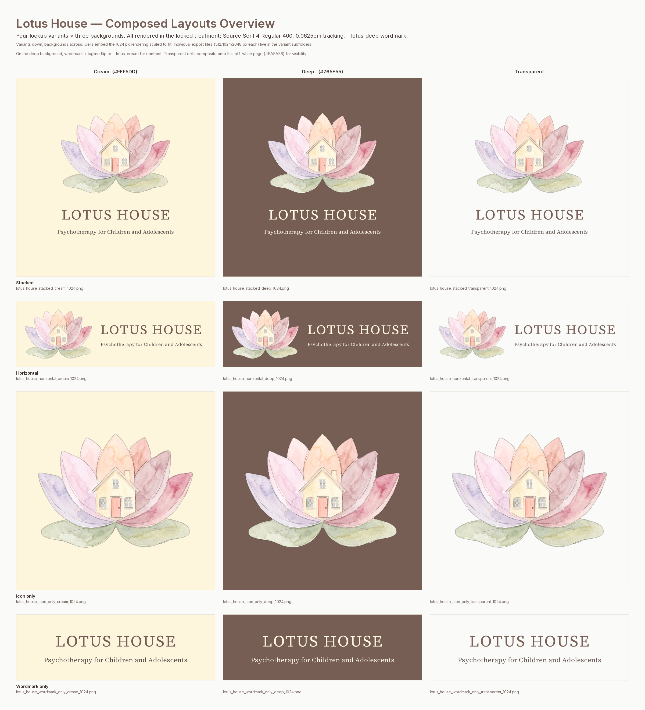

Composed Layouts
Four canonical lockups of the Lotus House brand: stacked, horizontal, icon‑only, and wordmark‑only. Each is rendered against a cream, deep, and transparent background.
- Stacked
- Logo above wordmark + tagline. Square. Use for social posts, business cards, profile contexts.
- Horizontal
- Logo beside wordmark + tagline. 3:1 landscape. Use for website headers, email signatures, letterheads.
- Icon only
- Logo alone. Square. Use for favicons, social avatars, small contexts where the wordmark is established elsewhere.
- Wordmark only
- Wordmark + tagline alone, no logo. Use for footers, contexts where the watercolour won't reproduce well, or as a typographic-first variant.

Export sizes per variant × background
Stacked
Square. Cream / Deep / Transparent.
stacked/lotus_house_stacked_<bg>_<512|1024|2048>.png
Horizontal
3:1 landscape. Cream / Deep / Transparent.
horizontal/lotus_house_horizontal_<bg>_<512|1024|2048>.png
Icon only
Square. Cream / Deep / Transparent.
icon_only/lotus_house_icon_only_<bg>_<512|1024|2048>.png
Wordmark only
3:1 landscape. Cream / Deep / Transparent.
wordmark_only/lotus_house_wordmark_only_<bg>_<512|1024|2048>.png